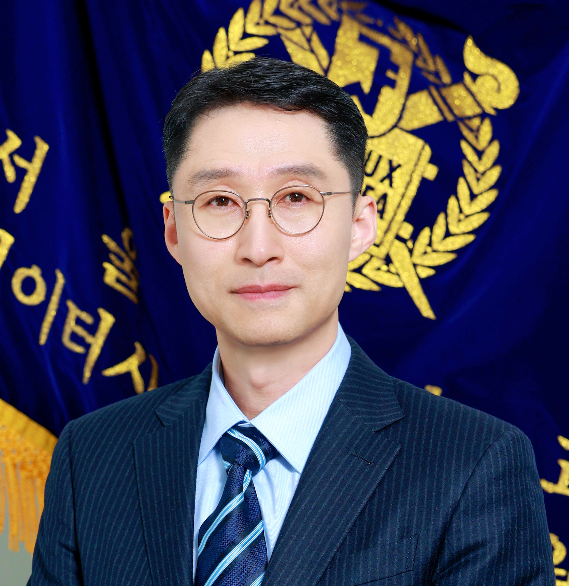

DBX LAB
|  |
Hyungsoo Jung (정형수: 丁亨秀), Ph.D.
Professor
DBX Laboratory, |
Research Interests
-
Database-oriented operating systems (DBOS) for large-scale data analytics
New DBMS architecture for processing hybrid transactional and analytical processing (HTAP) workloads
Education
- Mar 2004 - Aug 2009, Ph.D. in Computer Science, Seoul National University (advisor: Prof. Heon Y. Yeom)
- Thesis topic: End-to-end Internet congestion control for high bandwidth-delay product networks
- Mar 2002 - Feb 2004, M.S. in Computer Science, Seoul National University (advisor: Prof. Heon Y. Yeom)
- Thesis topic: Soft real-time operating systems
- Mar 1995 - Feb 2002, B.S. in Mechanical Engineering, Korea University
- Mandatory military service: Dec 1998 - Feb 2001 (USAG Humphreys)
Work Experiences
- Mar 2024 – present, Professor at the Graduate School of Data Science , Seoul National University, Seoul, South Korea
- Sep 2015 – Feb 2024, Professor at Dept. of Computer Science, Hanyang University, Seoul, South Korea
- Oct 2012 – Aug 2015, Sr. SDE, Amazon Aurora Database, Seattle, USA
- Apr 2012 – Sep 2012, Researcher (under Prof. Gernot Heiser), Trustworthy Systems Group, UNSW, Sydney, Australia
- Apr 2010 – Apr 2012, Postdoctoral researcher (under Prof. Alan Fekete), The University of Sydney, Sydney, Australia
- Jun 2006 – Dec 2006, Engineering intern, Google Zurich, Switzerland
Research Excellence and Professional Services
- 2026~2027 The VLDB Journal, Reviewer Board Member
- 2026 ACM SIGMOD 2026, Program Committee Member
- 2025 ACM SIGMOD 2025, Program Committee Member
- 2025 VLDB 2025, Program Committee Member
- 2022 Best Teacher Award, Hanyang University
- 2022 IEEE ICDE 2022, Program Committee Member
- 2021 ACM SIGMOD 2021 Best Paper Honorable Mention Award
- 2021 ACM SIGMOD 2021, Program Committee Member
- 2019 Best Teacher Award, Hanyang University
- 2013 ACM SIGMOD 2013 One of the Four Best Papers
Students
- Zguem Sara (사라) Ph.D. Student in CSE, Seoul National University , 2023.9 ~ present
- Education: M.S. in CSE, Seoul National University, Aug 2023
- Research: High-performance index for KV-storage systems
- Publications: in preparation for VLDB 2025 or SIGMOD 2026
- Keon-Wook Park (박건욱) Ph.D. Student (integrated) in GSDS, Seoul National University, 2024.9 ~ present
- Education: B.S. in CS, Hanyang University, Aug 2024
- Research: DB-OS Co-design for Fast Data Analytics
- Publications: in preparation for SIGMOD 2026
- Kyungmin Lim (임경민) Ph.D. Student in GSDS, Seoul National University, will start in 2025
- Education: B.S. and M.S. in CS, Hanyang University, Feb 2023 and Feb 2025
- Research: Efficient HTAP DBMSs and DB-OS Co-design for Fast Data Analytics
- Publications: SIGMOD 2025 (accepted), VLDB 2025 (will be submitted soon), and in preparation for SIGMOD 2026
- Yeon-Jin Park (박연진) Ph.D. Student (integrated) in GSDS, Seoul National University, will start in 2025
- Education: B.S. in CS, Hanyang University, Feb 2025
- Research: Universal, Efficient Garbage Collection for Any MVCC DBMSs
- Publications:in preparation for SIGMOD 2026
- Hyejin Choi (최혜진) M.S. Student in GSDS, Seoul National University, 2023.9 ~ present
- Education: B.S. in Economics, Korea University
- Research: Data Lakehouse Systems for ML/DL
- Publications: please stay tuned!
- Dong-Kwang Kim (김동광) M.S. Student in GSDS, Seoul National University, 2023.9 ~ present
- Education: B.S. in Sociology, Seoul National University
- Research: DB-OS Co-design for Fast Data Analytics
- Publications: in preparation for SIGMOD 2026
- Hae-Ram Kim (김해람) M.S. Student in CSE, Seoul National University, 2024.3 ~ present
- Education: B.S. in EE, Chungbuk National University
- Research: Accelerating HTAP through Emerging Hardware
- Publications: in preparation for SIGMOD 2026
- Cheol-Min Choi (최철민) M.S. Student in GSDS, Seoul National University, 2024.9 ~ present
- Education: B.S. in CS, Hanyang University, Aug 2024
- Research: DB-OS Co-design for Fast Data Analytics
- Publications: in preparation for SIGMOD 2026
- Sung-Ho Bae (배성호) M.S. Student in GSDS, Seoul National University, 2024.9 ~ present
- Education: B.S. in EECS, GIST, Aug 2024
- Research: Data Lakehouse Systems
- Publications: please stay tuned!
- Seo-Young Lee (이서영) Undergraduate Intern in GSDS, Seoul National University, 2024.11 ~ present
- Education: B.S. in CSE, College of Liberal Studies, Seoul National University, Aug 2025
- Research: New DBMS architecture for HTAP workloads
- Publications: please stay tuned!
Alumni
- Woong Sul (설웅)
- Education: B.S. in Material Science and Engineering and Ph.D. in CSE, Seoul National University, Feb 2022 (co-advised)
- Work: Teaching Assistant Professor at Hanyang University - Teaching CS major courses in systems area
- Jongbin Kim (김종빈)
- Education: B.S. and Ph.D. in CS, Hanyang University, Feb 2017 and Aug 2022, respectively
- Work: Amazon Aurora, AWS Inc., Seattle, USA - Developing new databases
- Publications: SIGMOD 2019 (first author), FAST 2019 (co-author), SIGMOD 2020 (first author), SIGMOD 2021 (first author), SIGMOD 2022 (first author)
- Sang-Yeop Rhee (이상엽)
- Education: B.S. in CS, Purdue University, and M.S. in CS, Hanyang University, Feb 2019
- Work: Bithumb Inc., Korea - Software development
- Hyeongwon Jang (장형원)
- Education: B.S. and M.S. in CS, Hanyang University, Feb 2017 and Feb 2019, respectively
- Work: SAP Labs Korea - Database development
- Publications: SIGMOD 2019 (co-author)
- Hyeonseok Oh (오현석)
- Education: B.S. and M.S. in CS, Hanyang University, Feb 2017 and Feb 2019, respectively
- Work: Google Korea - Software development
- Jae-eun Kim (김재은)
- Education: B.S. and M.S. in CS, Hanyang University, Feb 2017 and Feb 2019 (co-advised), respectively
- Work: MetisX Inc., Korea - Developing vector databases
- Hyunsoo Cho (조현수)
- Education: B.S. and M.S. in CS, Hanyang University, Feb 2018 and Feb 2020, respectively
- Work: Dnotitia Inc., Korea - Developing vector databases
- Publications: SIGMOD 2020 (co-author), SIGMOD 2021 (co-author)
- Kihwang Kim (김기황)
- Education: B.S. and M.S. in CS, Hanyang University, Feb 2018 and Feb 2020, respectively
- Work: SAP Labs Korea - Database development
- Publications: SIGMOD 2020 (co-author), SIGMOD 2021 (co-first)
- Seohui Son (손서희)
- Education: B.S. and M.S. in CS, Hanyang University, Aug 2018 and Feb 2021, respectively
- Work: SAP Labs Korea (previously) now unknown (Seattle) - Database development
- Publications: SIGMOD 2019 (co-author)
- Jaeseon Yu (유재선)
- Education: B.S. and M.S. in CS, Hanyang University, Feb 2020 and Feb 2022, respectively
- Work: SAP Labs Korea - Database development
- Publications: SIGMOD 2021 (co-author), SIGMOD 2022 (co-first)
- Kitaek Lee (이기택)
- Education: B.S. and M.S. in CS, Hanyang University, Feb 2020 and Feb 2023, respectively
- Current: preparing for studying abroad - Database research
- Publications: VLDB 2023 (co-first)
- Jaechan Ahn (안재찬)
- Education: B.S. and M.S. in CS, Hanyang University, Feb 2021 and Feb 2023, respectively
- Current: Ph.D. Student at the University of Maryland, College Park, USA - Systems research
- Publications: VLDB 2023 (co-first)
- Changmin Jeon (전창민)
- Education: M.S. in CSE, Seoul National University, Feb 2025
- Work: Samsung Electronics - Software development
- Hyolim Hong (홍효림)
- Education: M.S. in CSE, Seoul National University, Feb 2025
- Work: Searching - Software development
- Kihwan Kim (김기환)
- Education: B.S. and M.S. in CS, Hanyang University, Aug 2023 and Feb 2025, respectively
- Work: XCENA (previously MetisX) - Database development
- Publications: SIGMOD 2025 (co-first), VLDB 2025 (co-first, under review)
- Minseok Yun (윤민석)
- Education: B.S. and M.S. in CS, Hanyang University, Aug 2023 and Feb 2025, respectively
- Work: Self employed - Software development
- Publications: SIGMOD 2025 (co-first), VLDB 2025 (co-first, under review)
Selected Top-tier Publications
- “ Rapid Data Ingestion through DB-OS Co-design,” ACM SIGMOD 2025 (to appear)
- “ Deploying Computational Storage for HTAP DBMSs Takes More Than Just Computation Offloading,” VLDB 2023
- “ DIVA: Making MVCC Systems HTAP-Friendly,” ACM SIGMOD 2022
- “ Rethink the Scan in MVCC Databases,” ACM SIGMOD 2021 (Best Paper Honorable Mention Award)
- “ Long-lived Transactions Made Less Harmful,” ACM SIGMOD 2020
- “ Border-Collie: A Wait-free, Read-optimal Algorithm for Database Logging on Multicore Hardware”, ACM SIGMOD 2019
- “ Pay Migration Tax to Homeland: Anchor-based Scalable Reference Counting for Multicores,” USENIX FAST 2019
- “ Scalable Database Logging for Multicores,” VLDB 2018 (PVLDB)
- “ TCPRand: Randomizing TCP Payload Size for TCP Fairness in Data Center Networks,” IEEE INFOCOM 2015
- “ A Scalable Lock Manager for Multicores”, ACM Transactions on Database Systems 2014
- “ Scalable Serializable Snapshot Isolation for Multicore Systems,” IEEE ICDE 2014
- “ A Scalable Lock Manager for Multicores,” ACM SIGMOD 2013
- invited to ACM TODS 2014 as one of the four best papers of SIGMOD 2013.
- “ Serializable Snapshot Isolation for Replicated Databases in High-Update Scenarios,” VLDB 2011
- “ Adaptive Delay-based Congestion Control for High Bandwidth-delay Product Networks,” IEEE INFOCOM 2011
Useful Tips for Graduate Students
- Prof. Gernot Heiser (ACM/IEEE Fellow) at UNSW, Sydney, Australia
- Wonderful tips on "How to Write a Good Paper"
- Gernot's Guide to Technical Writing
- Gernot's List of Systems Benchmarking Crimes
- Roy Levin and David D. Redell, Ninth SOSP Program Committee Chairmen
- Prof. David A. Patterson (ACM A. M. Turing Award 2017) at UC Berkeley, CA, USA
- Prof. Wanda Pratt at the University of Washington, Seattle, WA, USA
- Prof. Michael Stonebraker (ACM A. M. Turing Award 2014) at MIT, MA, USA